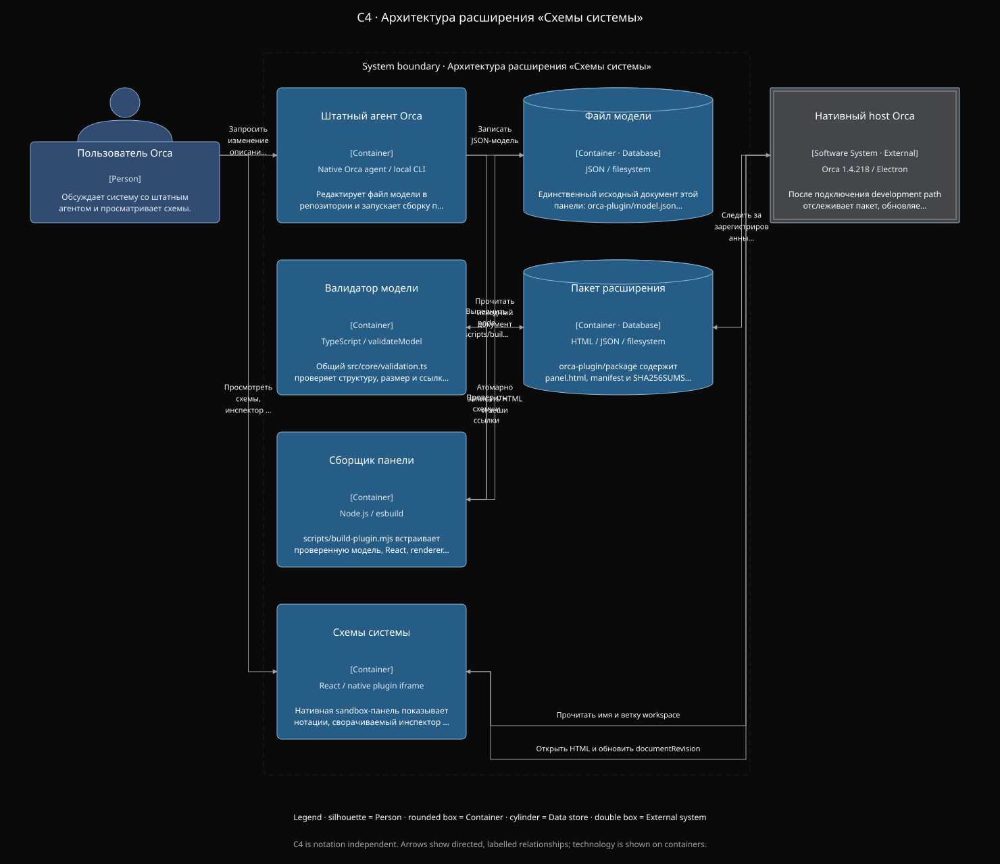

Масштаб под задачу
Общий план или отдельный узел. Быстрые шаги масштаба, готовые значения и навигация по большой схеме.
Нативный плагин для Orca Beta · 0.3.0
От отдельных изменений — к целой картине.
Архитектура, процессы и данные в одной панели Orca.
Локальная установка · Открытый исходный код · Без отдельного сервиса

01 / Вся система рядом с кодомПример модели. Не снимок рабочей сессии.
МЕНЬШЕ ПЕРЕКЛЮЧЕНИЙ. БОЛЬШЕ КОНТЕКСТА.
Кто вызывает сервис? Где проходит процесс? Как связаны данные? Переключайте взгляд на одну модель, оставаясь внутри IDE.
Панель помогает читать устройство системы: масштабировать схему, выбирать элементы, раскрывать связи и сверяться с исходным JSON.
ШЕСТЬ СПОСОБОВ ПОСМОТРЕТЬ
От общего устройства
до конкретного перехода.
Компоненты, их роли и связи. Общая картина архитектуры с описаниями и технологиями.
Задачи, события, развилки и дорожки участников. Проследите путь от начала до результата.
События и функции в цепочке процесса. Увидьте условия переходов и логику выполнения.
Участники и сообщения во времени. Порядок взаимодействий становится видимым.
Сущности, поля, ключи и отношения. Структура данных без погружения в отдельные файлы.
Состояния и переходы между ними. Жизненный цикл объекта в одном представлении.
ОТ ОБЩЕГО К ЧАСТНОМУ
Общий план или отдельный узел. Быстрые шаги масштаба, готовые значения и навигация по большой схеме.
Выберите элемент на схеме или в видимом списке. Прочитайте детали, перейдите к связанному элементу. Сверните панель, когда нужно больше пространства.
JSON открыт для чтения. Проверяйте, на каких данных построена схема, без отдельного редактора или ручного обмена файлами.
ВАШ ПРИВЫЧНЫЙ ЧАТ. НОВЫЙ УРОВЕНЬ ОБЗОРА.
Обсуждайте изменения в нативном чате Orca. По инструкции проекта агент проверяет исходники, меняет одну JSON-модель и выполняет конечную сборку плагина.
Вы описываете изменение.
Агент работает с реальным кодом.
Агент обновляет модель.
Сборка проверяет её структуру.
В режиме разработки Orca
перезагружает собранную панель.
Обновление требует явной работы агента и сборки. Плагин не сканирует репозиторий автоматически и не обновляет модель после каждого сообщения. Сейчас источник — один заданный файл модели; переключение workspace не привязывает другой проект.
Как настроить режим разработкиНАЧНИТЕ С ОДНОЙ ПАНЕЛИ
ZIP · локальный плагин · beta
Сохраните ZIP и распакуйте папку плагина.
В Orca откройте Settings → Plugins и выберите установку из локальной папки с orca-plugin.json.
Включите плагин и подтвердите единственное разрешение workspace:read.
Выберите «Схемы системы» в боковой панели Orca.
Проверенная версия — Orca 1.4.218. Плагин в beta; совместимость с более новыми версиями пока не подтверждена. Для обновлений модели через агента отдельно настройте режим разработки.
ДЕТАЛИ ПЕРЕД УСТАНОВКОЙ
Это нативный плагин просмотра схем внутри Orca. Он использует существующий чат IDE для работы с агентом и не запускает отдельный веб-сервис.
Нет. Агент изучает исходники и явно обновляет структурированную JSON-модель по инструкции проекта. Плагин отображает шесть представлений этой модели. Полнота схемы зависит от её содержимого.
Панель предназначена для просмотра: нотации, масштаб, инспектор и JSON только для чтения. Изменения модели выполняет агент в нативном чате Orca с последующей сборкой.
В проверенной Orca 1.4.218 хост блокирует прямое скачивание из панели и не предоставляет действие сохранения. Поэтому в плагине нет кнопки, обещающей такой экспорт. SVG-примеры доступны в исходном репозитории; это отдельные подготовленные файлы.
Плагин запрашивает только workspace:read. Он показывает встроенную при сборке модель, не отправляет её на внешний сервис и не запускает собственных агентов. Этот сайт не содержит форм сбора данных или аналитических скриптов.
Нет. «Схемы системы / System Diagrams» — независимый проект с открытым исходным кодом. Orca — название среды, для которой создан плагин.
СХЕМЫ СИСТЕМЫ / SYSTEM DIAGRAMS